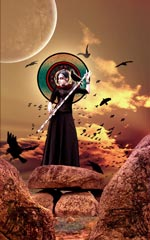

Морриган, в ірландській міфології богиня війни і смерті на полі бою, яка допомагала Племенам богині Дану в обох битвах при Мойтуре. Її ім'я переводить як "Велика Королева" або "Королева Привидів", що повністю відповідає її природі. Морриган можна сприймати і як окреме божество, і як свого роду триіпостасного богиню, що ототожнюється з іншими богинями війни: Махою, Бадб і Немаін.
Сама богиня Морриган участі в битвах не приймала, але неодмінно була присутня на поле бою і використовувала всю свою могутність, щоб допомогти тій чи іншій стороні. Крім того, Морриган в легендах приписується дар пророцтва і здатність говорити всілякі заклинання.
Роль Морриган в ірландської міфології дуже схожа на роль валькірій в скандинавсько-германської космології. І Морриган, і валькірії використовують магію для того, щоб накласти кайдани на воїнів і вибрати того, хто з них загине.Морриган також асоціювалася з сексуальним початком і плодючістю; останній аспект дозволяє ототожнювати її з матір'ю богинею. Її сексуальність підкреслена в легенді про Кухулине, коли вона намагалася спокусити героя, але була відкинута їм, чому в її серці спалахнула ревнива ненависть до Кухулину.
Морриган також асоціювалася з сексуальним початком і плодючістю; останній аспект дозволяє ототожнювати її з матір'ю богинею. Її сексуальність підкреслена в легенді про Кухулине, коли вона намагалася спокусити героя, але була відкинута їм, чому в її серці спалахнула ревнива ненависть до Кухулину.
Улюбленим обличчям Морриган в магічних перетвореннях була ворона; саме в такому вигляді вона сіла на плече героя Кухулина, після чого той загинув у бою, борючись проти армії королеви Медб, адже свого часу Кухулін не тільки відмовив Морриган в любові, але в гніві навіть завдав їй рану. Це і вирішило його долю.